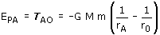
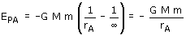
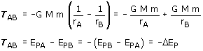

| Energía potencial Se define energía potencial de una masa m colocada en un punto A, como el trabajo que hace el campo gravitatorio cuando la masa m se desplaza desde dicho punto A hasta un punto O elegido arbitrariamente (Origen de potencial).  Cuando se trabaja con masas puntuales o lejos de un planeta se toma como origen de potencial el punto del infinito  Tomando como origen de potencial el infinito la energía potencial será negativa en cualquier punto Importante El trabajo del campo es igual a la variación de energía potencial cambiada de signo  |